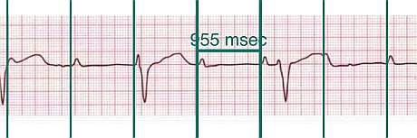
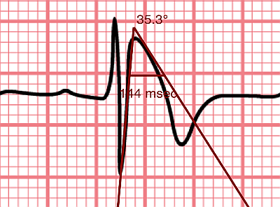

Commencement rapide
Quand le Compas EP commence, un échantillon d'ECG et un compas de temps sont chargés. Déplacer le compas en touchant la barre transversale et en la glissant avec votre doigt. Élargir et contracter le compas en touchant une barre verticale et en la glissant. Pincer et zoomer l'image de l'ECG pour l'agrandir ou la rétrécir selon votre besoin. Si l'ECG est plus grand que votre écran, vous pouvez le glisser avec votre doigt afin de trouver un endroit pour mesurer. Il faut étalonner un compas pour faire des mesures.
Charger une image
Il y a plusieurs manières de charger une image d'un ECG.
- Prendre une photo d'un ECG
- Choisir une photo de votre collection de photos
- Choisir une photo ou un PDF avec l'icône de partage d'autres applications
AliveCor Kardia
Pour regarder des ECGs dans l'application AliveCor Kardia, choisir Journal, puis Partage pour l'ECG que vous voulez regarder. Après la sélection du bouton Partage, choisir PDF de la liste d'options qui apparaît. Ensuite taper le bouton Partage et choisir Compas EP.
Ajustement de l'image
Vous pouvez réajuster la position d'une image en utilisant les gestes de multitouche. Pincer pour la zoomer et glisser pour la faire défiler. Appuyer quelques secondes sur l'image pour montrer un menu avec des options pour tourner l'image et changer la page si vous avez chargé un PDF.
Fixer l'image
Pendant le mouvement et l'ajustement des compas, vous pouvez parfois déplacer l'image ECG involontairement. Choisir Immobiliser l'image pour immobiliser l'image sur l'écran. Un message apparaîtra en haut de l'écran pour indiquer que l'image est immobilisée. Démobiliser l'image en choisissant Débloquer l'image.
Déplacement des compas
Glisser la barre transversale d'un compas pour le déplacer comme une unité. Glisser les barres à gauche ou à droite (ou en haut ou en bas pour les compas d'amplitude) pour les étendre ou réduire. Les compas d'angle sont déplacés comme une unité en glissant l'angle au sommet ou juste au-dessus du sommet.
Addition et suppression des compas
Choisir + pour ajouter de nouveaux compas. Choisir Temps, Amplitude, ou Angle pour ajouter le type de compas que vous voulez. Taper deux fois sur un compas pour le supprimer.
Sélection d'un compas
Quand il y a plus d'un compas sur l'écran, il faut qu'un compas soit choisi comme le compas actif pour l'étalonner ou pour faire les calculs. Par défaut un compas non choisi est bleu et un compas choisi est rouge. Vous pouvez changer les couleurs en utilisant les préférences. Il est aussi possible de changer les couleurs de compas individuels. Une simple touche sur un compas non choisi le choisira. Une deuxième touche encore (mais pas trop vite, parce que une double touche supprimera le compas) le désélectionnera.
Plus d'options
Changer les couleurs des compas
Appuyer pendant quelques secondes sur un compas et choisir Couleur pour changer sa couleur.
Petits mouvements
Appuyer pendant quelques secondes sur un compas et choisir Régler dans le menu qui apparaît. Appuyer quelques secondes sur un des composants du compas choisi (barre transversale, barre latérale ou, en cas d'un compas d'angle, peut-être le sommet) et un menu avec des boutons du mouvement apparaîtra. Des boutons avec des flèches à gauche, à droite, montantes ou descendantes déplaceront le composant choisi ou tout le compas en utilisant des petits mouvements. Vous pouvez les déplacer par un seul point ou par un dixième d'un point, selon quel type de flèche vous appuyez (⇨ ou →). Appuyer le bouton OK pour retourner au menu principal.
Les compas marchants

Figure 1 : Un compas marchant
Appuyer quelques secondes sur un compas et choisir March pour changer un compas de temps en un compas qui marche. Des lignes verticales apparaîtront égales à la largeur du compas à chaque côté. C’est utile pour l’évaluation les rythmes irréguliers ou réguliers, ou pour détecter les ondes P marchantes pendant une tachycardie ou un bloc cardiaque. Choisir March encore pour changer à un compas normal.
Étalonnage
Choisir Étalonner. Étirer le compas sélectionné sur un intervalle connu (par exemple 1 000 msec de temps, ou 10 mm d'amplitude). Choisir Définir. Dans la boîte de dialogue, saisir l'intervalle et les unités (par exemple 500 msec, ou 1 sec, ou 1 mV). Choisir Définir dans la boîte du dialogue pour définir l'étalonnage. Noter qu'il faut que les compas de temps et d'amplitude soient étalonnés individuellement. Après l'étalonnage, les compas montreront les intervalles avec les unités utilisées pour les étalonner. Des nouveaux compas créés utiliseront le même étalonnage. Il ne faut pas étalonner les compas d'angle. Cependant, après l'étalonnage de compas de temps et d'amplitude, les compas d'angle peuvent être utilisés comme un Brugadometer.
Changement de l'étalonnage
Vous pouvez réétalonner à tout moment. L'étalonnage peut être complètement effacé en choisissant Effacer sur le menu d'étalonnage. Noter que l'étalonnage continue quand l'appareil est tourné ou l'image est zoomée. La sélection d'une nouvelle image réinitialisera l'étalonnage.
Prendre des mesures
L'intervalle mesuré par les compas de temps ou d'amplitude est affiché près de la barre transversale de le compas. Avant l'étalonnage des compas, les mesures sont affichées en unités arbitraires (les pointes sont à peu près égales aux pixels). Les compas d'angle montrent une mesure de l'angle actuel et il ne faut pas les étalonner.
Intervalle/fréquence
Après qu'un compas de temps est étalonné, si vous utilisez des unités du temps (par exemple msec ou sec) pour l'étalonnage, il est possible d'alterner entre les mesures d'intervalle (par exemple 600 msec) et les mesures de fréquence cardiaque (par exemple 100 bpm) en choisissant Intervalle/FC ou Int/FC.
Calcul de la fréquence moyenne et de l'intervalle moyen
Sélectionner un compas étalonné et mesurer un nombre d'intervalles. Choisir Fréquence moyenne or FCM et saisir le nombre d'intervalles mesurés. Une boîte de dialogue montrera la fréquence cardiaque moyenne calculée et l'intervalle moyen. Cela est utile pour le calcul des fréquences et des intervalles pendant un rythme irrégulier, par exemple la fibrillation auriculaire.
Calcul du QT corrigé
Choisir QTc. Étendre le compas sélectionné sur un ou plusieurs intervalles RR et puis choisir Mesurer. Saisir le nombre d'intervalles étant mesurés et puis choisir Continuer. Utiliser le même compas pour mesurer l'intervalle QT. Choisir Mesurer. Une boîte de dialogue montrera le QT calculé en utilisant la formule de Bazett par défaut. Choisir Répéter QT pour faire une nouvelle mesure du QT avec le même intervalle RR, ou choisir OK pour terminer. On peut changer la formule en utilisant les préférences.
« Brugadometer »

Figure 2 : Brugadometer avec une base de triangle 5 mm au-dessous du sommet de le compas
Le Brugadometer est un outil de diagnostic, utilisé pour l'analyse du syndrome de Brugada. Cet outil a été développé en collaboration avec Dr. Adrian Baranchuk et ses collègues à l'Université Queens, Kingston, en Ontario. Le Brugadometer peut distinguer entre un bloc de branche droite incomplète, et un motif du syndrome de Brugada aux fils V1 ou V2. Cet outil est en cours de développement dans Compas EP et il évoluera dans des futures versions. Pour utiliser le Brugadometer, il faut étalonner un compas de temps en msec ou mm et un compas d'amplitude en mm. Ensuite, un compas d'angle apparaîtra avec un triangle au sommet. La base du triangle sera localisée à 5 mm au-dessous du sommet du triangle. L'alignement correct de ce triangle avec l'onde r' pour un individu soupçonné d'avoir le syndrome de Brugada donnera la mesure de l'angle beta et la mesure de la base du triangle 5 mm au-dessous du sommet. Une base de triangle qui est > 160 msec (4 mm à une vitesse standard de 25 mm par seconde) suggère la présence du syndrome de Brugada. Voici de Luna AB, Garcia-Niebla J, Baranchuk A. New electrocardiographic features in Brugada syndrome. Curr Cardiol Rev. 2014 Aug; 10(3): 175-180 pour plus d'informations.